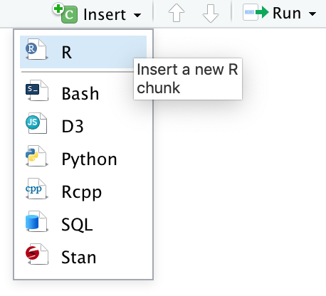
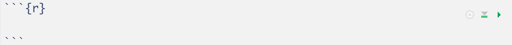
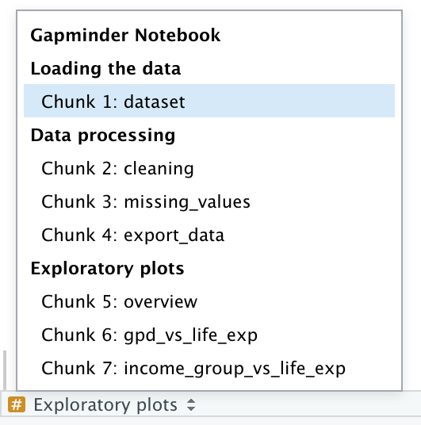
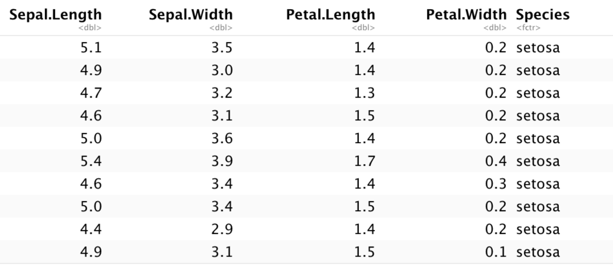
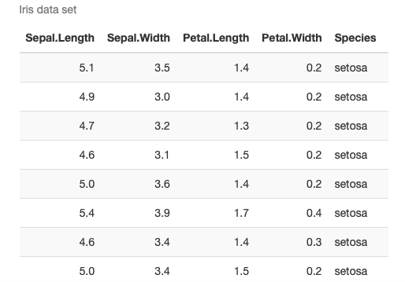
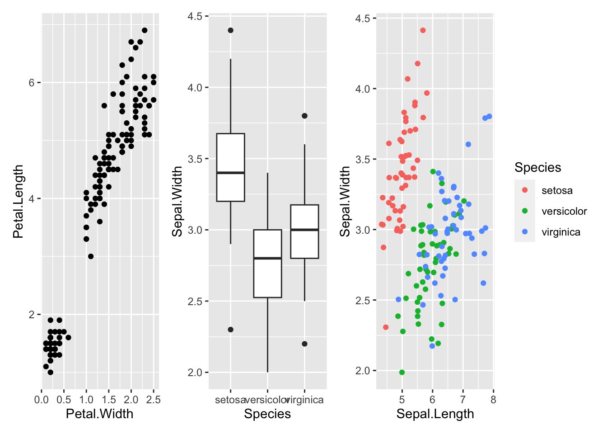
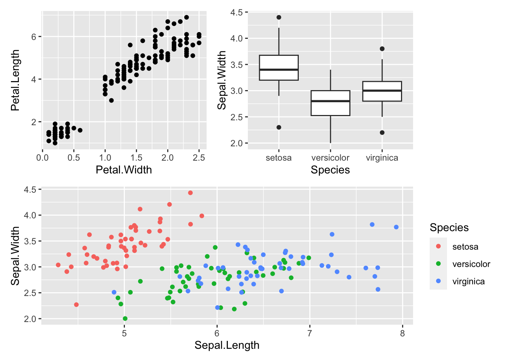
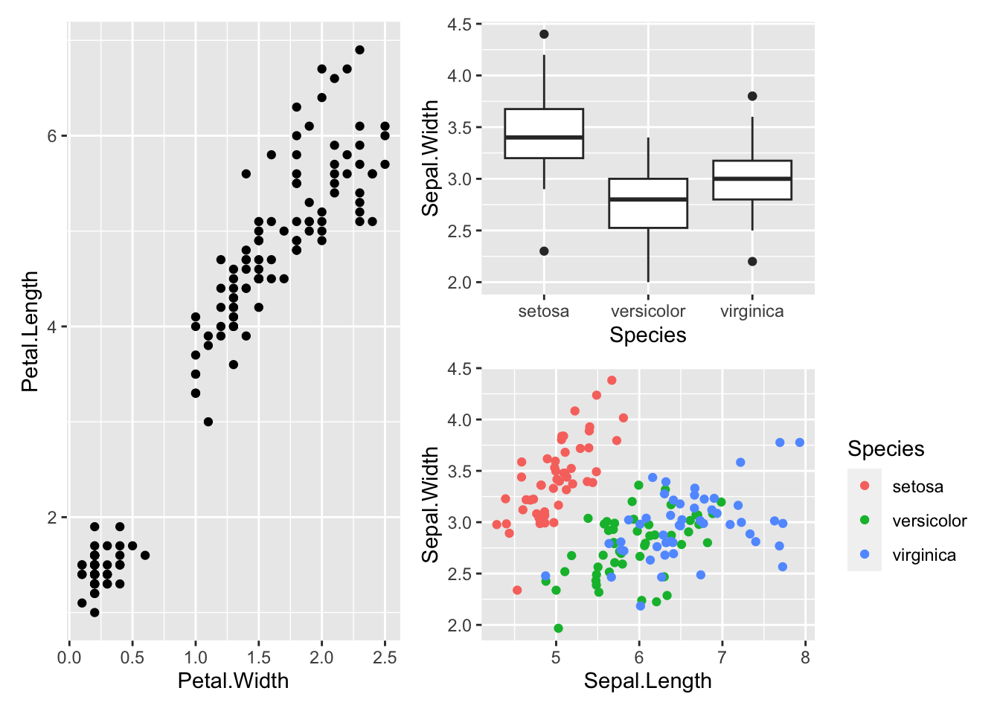
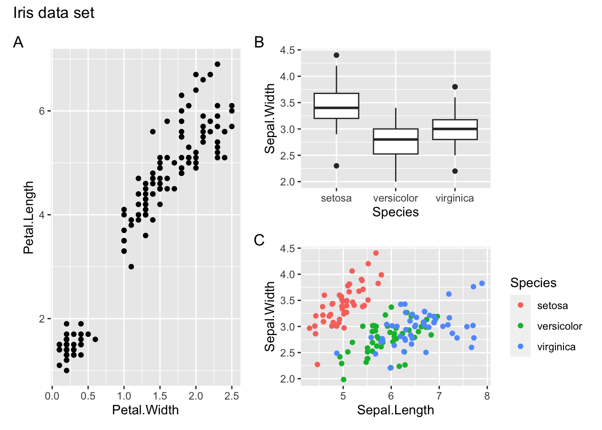

Chapter 4 Documentation
4.1 Objectives
- Be able to use basic markdown syntax
- Understand how to use R Markdown by integrating text formatting and R code
- Be able to create dynamic tables in R
- Know how to compose multipanel figures programmatically in R
Part of these materials were originally developed by Alexia Cardona1.
4.2 Libraries
| Libraries | Description |
|---|---|
tidyverse |
A collection of R packages designed for data science |
rmarkdown |
Converts markdown and R code into rendered documents |
kableExtra |
Generates dynamic tables |
patchwork |
Composes plots generated by ggplot() |
4.3 RMarkdown
R Markdown is integrated in RStudio and enables you to create documents, reports, presentations and dashboards. This in turn helps you to communicate your research better than using scripts alone. It does this because it supports extensive text formatting and easy code integration. That in turns enables you to walk a reader through an analysis much more easily than you would be able to do using comments in a script.
An R Markdown file is made up of 3 basic components:
- header
- markdown
- R code chunks
Here we will assume that the output of our report is an .html file. HTML files are files for web pages. This means that the report that we will generate can be easily deployed on the web.
R Markdown can also be used to generate PDFs, Microsoft Word or Latex documents, among other things.
4.3.1 R Markdown header
The markdown document starts with an optional header in YAML (YAML Ain’t Markup Language) format known as the YAML metadata. Oh yes, programmers have a very particular sense of humour…
In the example below, the title, author and date are specified in the header. Other options can be specified in the header such as table of content which we will look at later on in the course.
---
title: "Reproducibility without fuss"
author: "Martin van Rongen"
date: 20 Jul 1969
---To create a new R Markdown file go to File -> New File -> R Markdown. To generate the output file (in this case an html document), press the knit button:

Alternatively, use the corresponding keyboard shortcut (Mac Cmd + Shift + K, Windows Ctrl + Shift + K).
4.4 Markdown
The text following the header in an Rmarkdown file is in Markdown syntax. This is the syntax that gets converted to HTML format once we click on the Knit button or the Build website button (yes, you can deploy whole websites using R Markdown). The philosophy behind Markdown is that it should be easy to write and easy to read.
The full documentation of the Markdown syntax can be found at https://pandoc.org/MANUAL.html. However this might be a bit of information overload when you’re starting. Therefore below is a simplified version of the Markdown syntax.
4.4.1 Headings
Below is the Markdown code you need to use to specify headings at different levels and the rendered output respectively below the code:
# Heading 1
Heading 1
## Heading 2
Heading 2
### Heading 3
Heading 3
#### Heading 4
Heading 4
4.4.2 Inline text formatting
To make text bold use **double asterisks** or __double underscores__.
To make text italic use *asterisks* or _underscores_.
To make text superscript use ^caret^.
To make text subscript use ~tilde~.
To mark text as inline code use `backticks`.
To strikethrough text use ~~double tilde~~.
4.4.3 Line breaks
To create a line break, put more than 2 spaces at the end of a sentence or place \ in a new line followed by a new line  .
.
4.4.4 Links
4.4.4.1 Linking text to Headers
To link text to a header you would need to specify an identification tag next to a header as follows:
# Markdown {#markdown-header}
Then to link text to this header use [link to header](#markdown-header). This will be rendered as link to header.
4.4.4.2 Linking text to a webpage
To create a link to a webpage use [text of link](https://www.gapminder.org). This is rendered as text of link.
4.4.4.3 Footnotes
To indicate a footnote use[^2] and, for example, indicate another one as[^3] (I already used [^1]!) and then specify the wordings of the footnotes as:
[^2]: This is a footnote.
[^3]: Another footnote.
You do not need to put footnotes at the end of the document for them to be rendered there. This example is rendered as follows:
To indicate a footnote use2 and, for example, indicate another one as3 and then specify the wordings of the footnotes as:
4.4.5 Lists
4.4.5.1 Ordered lists
To create an ordered list use the following syntax:
1. Item 1
2. Item 2
3. Item 3This is rendered as:
- Item 1
- Item 2
- Item 3
Use 4 spaces to indent an item if you would like to have sub-lists:
1. Item 1
2. Item 2
3. Item 3
a. Item 3a
i. Item 3ai
ii. Item 3aii
b. Item 3b
c. Item 3c
4. Item 4- Item 1
- Item 2
- Item 3
- Item 3a
- Item 3ai
- Item 3aii
- Item 3b
- Item 3c
- Item 3a
- Item 4
4.4.6 Inserting images
To insert an image use the following syntax: . Example:

Will be rendered as:

You can adjust the size of the image by adding a width and height in pixels in between curly brackets, like this:
{width=100px height=100px}
will plot like
4.4.7 Blocks
Blocks or quotes in the notebook can be created by using the > sign as follows:
> "Life can be great, when you try something new."
>
> _Kevin the koala_This is rendered as:
If you would like to add code blocks, use ``` before and after the code as follows:
```
print("Hello world")
x <- 1 + 2
print(x)
```This will be rendered as:
print("Hello world")
x <- 1 + 2
print(x)
4.4.8 Adding a table of contents
To add a table of contents to your report add the following to the YAML header you need to specify the output (in this case a html_document) and set toc to true. If you want to make sure your table of contents stays visible even whilst scrolling, then you need to float it, using toc_float: true.
output:
html_document:
toc: true
toc_float: trueBy default all headings up to level 3 headings are displayed in the table of contents. You can adjust this by specifying toc_depth as following:
output:
html_document:
toc: true
toc_depth: 44.4.9 Adding references
Adding references and citations in Markdown is not as easy as reference manager software such as Mendeley. To be able to create citations you will need to create a bibliography file with all the references in it. Here is an example of a bibliography file. The bibliography file has to be placed in the same folder as the one where the .Rmd file is. Next, add the following to the YAML header:
bibliography: references.bib
link-citations: yesYour YAML header should now look like:
---
title: "Reproducibility without fuss"
author: Martin van Rongen
date: 19 Dec 1972
bibliography: references.bib
link-citations: yes
---To cite a reference use the @ together with the ID of the reference. Example:
Citation to my paper @cardona2014 and @cardona2019
Will be rendered as:
Citation to my paper L. A. A. Cardona Alexia AND Pagani (2014) and A. Cardona et al. (2019)
To add the bibliography at the end of the report add a References heading at the end of the report:
# References
See https://rmarkdown.rstudio.com/authoring_bibliographies_and_citations.html for more information.
4.5 Exercise: Getting started
Exercise 4.1 To get you started, I’d like you to do the following:
- Create an
R Projectif you haven’t done so already - Start a new
R Markdownfile and save it in the appropriate subfolder (e.g.notebooks) - Think about one of your own projects and use that to come up with a title.
- Create three levels of headings, sub-dividing your project and try out some of the inline text formatting.
- Add a link to the https://www.gapminder.org website (or any other website).
- Use
knitto render an html document and see if it looks like you expected.
4.6 R code chunks
So far we have not used any R code and all the code we used so far is in Markdown. As the name suggests, Rmarkdown files contain markdown and R. Rmarkdown files have a .Rmd extension. Using R in a markdown document makes sense if we integrate our analysis in our report. Some operations that we might need to do are; loading our data set, performing some operations on the data set and displaying results, either in a table or in a plot. We will be doing all this in the following sections.
If you would like to insert R code inside the notebook you will have to insert it inside an R code chunk to be able to execute it. To do this click on the Insert button at the top of the Source panel in RStudio:

Or use the associated shortcut (Mac Cmd + Option + I, Windows Ctrl + Alt + I).
This creates an R code chunk as follows:

Alternatively, you can type the r code chunk (although I recommended using the keyboard shortcut). The R code should be placed in between the triple backticks. Note that on the right hand side of the R code chunk there is a green “play” button that will run the R code chunk if pressed. By default, when the Rmarkdown document is knitted, the R code will be executed and the R code chunk is displayed before the executed code.
To run a chunk you can use the Run button or the shortcut (Mac Cmd + Shift + Enter, Windows Ctrl + Shift + Enter).
4.6.1 Chunk names
It is possible to give names to chunks using ```{r chunk_name}. This has several advantages:
- You can navigate more easily through your R Notebook using the drop-down code navigator:

Graphics produced by the chunks will have meaningful names based on the chunk name, which is a big improvement over
Untitled1.png.One chunk name has special meaning:
setup. In R Notebooks the chunk namedsetupwill automatically run only once, before any other chunks are run.
4.6.2 Chunk options
You can control the output of chunks with different options in the chunk header (e.g. {r, include = FALSE}).
These chunk options include:
eval = FALSEprevents code from being evaluated. No code is run and no output displayed. Useful to display example code or avoiding commenting out many lines.include = FALSEdo not display the code and results in the page after it is knitted. The R code however still runs and therefore the variables or results in this code chunk can be used by the other chunks.echo = FALSEdoes not display the code, but it displays the results in the rendered file.message = FALSEorwarning = FALSEprevents messages or warnings from being displayed in the rendered file.
There are almost 60 options by knitr that you can use to customise your code blocks. A full list of options can be found here.
4.7 Tables
Tables can be created manually or dynamically.
4.7.1 Manually creating tables
Although probably only useful for small tables, you can manually create tables, using |and - as follows:
| country_id | country |
| ----------- | ----------- |
| afg | Afghanistan |
| ago | Angola |This is rendered as:
| country_id | country |
|---|---|
| afg | Afghanistan |
| ago | Angola |
Table alignments can be done using the following syntax:
| country_id (left) | country (centre) | world_region (right) |
| :--- | :----: | ---: |
| afg | Afghanistan | south_asia |
| ago | Angola | sub_saharan_africa |This is rendered as:
| country_id (left) | country (centre) | world_region (right) |
|---|---|---|
| afg | Afghanistan | south_asia |
| ago | Angola | sub_saharan_africa |
4.7.2 Dynamic tables using rmarkdown
Clearly creating a large table this way is not very efficient or often even feasible when dealing with larger data sets. Furthermore, it goes against the principle of trying to make your research reproducible because the data are not generated through code.
R Markdown has some basic functionality to create tables in HTML. The paged_table() function creates a table that supports paging rows and columns. When we use this on the built-in iris data set it looks like this:

4.7.3 Dynamic tables using kableExtra
Apart from the basic functions available in rmarkdown, we can also use the kableExtra package, which uses the knitr::kable() function to generate tables. It allows you to build complex tables and adjust the table styles easily.
More information can be found here.
Let’s explore that a bit more by generating a table that displays the iris data set.
The table is styled in twitter-fashion using kable_styling(), with striped rows that highlight when you hover over them.
The table is embedded in a scroll box of a fixed dimension using scroll_box.
Here I’m using the pipe symbol (%>%) to pipe the output from one function to the next.
iris %>%
kable(caption = "Iris data set") %>%
kable_styling(bootstrap_options = c("striped", "hover"),
full_width = FALSE) %>%
scroll_box(width = "100%", height = "400px")
Somewhat frustratingly, pagination is not possible with kable. So if you have a long table, you are best off using the paged_table() function from the rmarkdown package.
4.8 Composing figures with patchwork
Apart from using a markdown language to render your text output, it can also be very useful to compose figures programmatically. Of course it is possible to generate figures with multiple panels using image editing software, but that does not really fit in with the reproducibility ethos, does it?
So how can we do this in R? There is a package that allows you to do just that for figures generated byggplot(): `patchwork’.
If you need to install it, run the following code in your console:
Then load the library:
Patchwork requires you to assign plots to an object and then you can use mathematical operators such as +, |, / to organise your figures.
Let’s create three figures and go through the options. You can just copy/paste the code, because the figures themselves are not important. It’s the use of patchwork we’re focussing on.
Plots:
p1 <- iris %>%
ggplot(aes(x = Petal.Width,
y = Petal.Length)) +
geom_point()
p2 <- iris %>%
ggplot(aes(x = Species,
y = Sepal.Width)) +
geom_boxplot()
p3 <- iris %>%
ggplot(aes(x = Sepal.Length,
y = Sepal.Width,
colour = Species)) +
geom_jitter()4.8.1 Adding plots together
The simplest way to add plots together using patchwork is to use the + operator:

You can control how the plots are displayed. For example, we can put the third plot (p3 below the others):

Or we can stretch out the first plot over two rows:

We can then further customise the plot. We can add annotations using plot_annotation:
- add a title using
title = - add panel labels using
tag_levels =(it takes different arguments, e.g.Afor capital letters,afor lower case letters,Ifor Roman numerals etc.)

There are more options available, which you can find on the patchwork website.
4.9 Exercise: Writing a short report
Exercise 4.2 For this exercise I’d like you to create a new R Markdown file, and do the following:
- Create 3 heading levels, as previously done
- Add a table of contents
- Using the default
mtcarsdata set, create- a dynamic table
- create 2 plots in ggplot (e.g. scatter plot of
dispvshp; box plot ofcarbvsdisp) - create a two-panel figure in
patchwork, with a title, caption and panel tag knitthe document and admire your results
4.10 R Markdown limitations
Some limitations that R Markdown has:
- Figure and table numbering is not supported. There is still a way around this, by using third-party packages e.g., captioner or bookdown (which is a great package to use when you want to group your analysis together in a book format!).
- If you are looking at specific customisations that are different from the default Markdown format, e.g., headings using different font specifications, then this gets tricky and markdown might not be the best approach.
These materials have been adapted from Reproducible research in R, which has been developed by Alexia Cardona.↩︎
This is a footnote.↩︎
Another footnote.↩︎